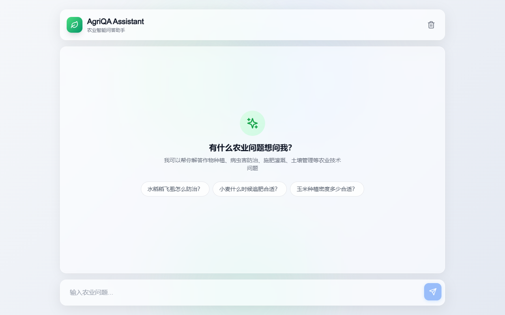
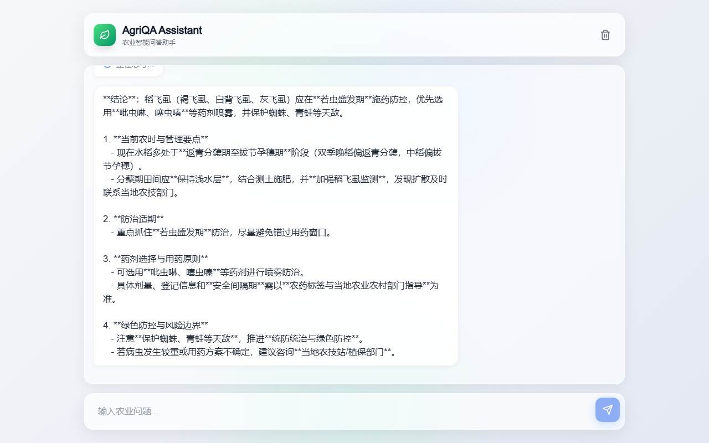
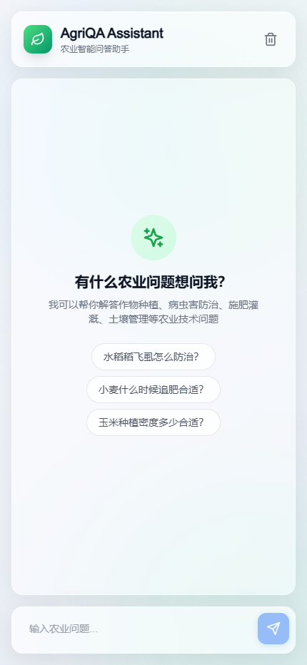
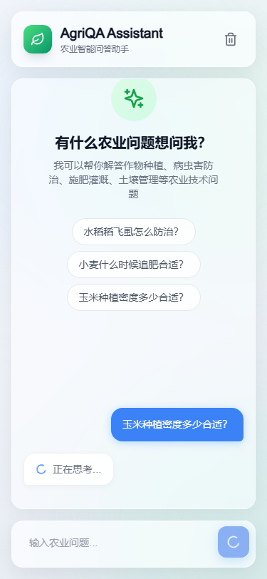
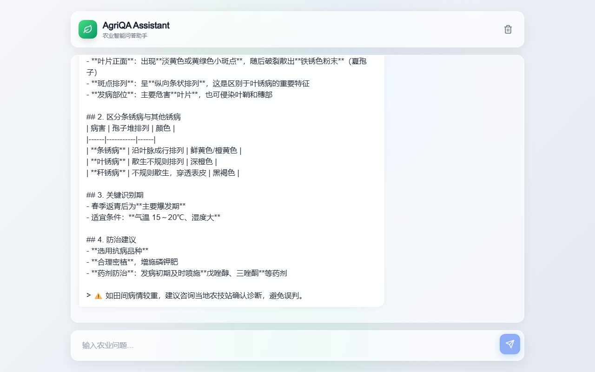

融合 ChromaDB 私有农业知识库、多轮对话记忆与 Apple Liquid Glass 设计语言，为农业从业者提供专业、可靠、即时的农技知识服务
从智能对话到场景化服务，全方位覆盖农业技术需求
SSE 流式响应、决策卡、知识溯源、多轮对话记忆，让每一次问答都有据可查
结构化症状输入 → 智能诊断 → 证据来源背书，帮助快速识别病虫害
基于作物、地区、生长阶段的智能农事安排，融合天气风险评估
检索惠农政策证据，A 级来源背书，确保政策信息可追溯、可验证
ChromaDB 向量检索 + 多策略融合（Hybrid、RRF、Parent-Child），检索质量可量化评估
Apple 风格毛玻璃设计、流畅动画、响应式布局，桌面移动端完美适配
桌面端 · 移动端 · 各功能模块真实展示





LangGraph + ChromaDB + FastAPI + Next.js 四层架构
Next.js 14 + shadcn/ui
Tailwind CSS + Framer Motion
Apple Liquid Glass 设计
FastAPI + LangGraph
Agent 路由 + 工具调用
SSE 流式响应
ChromaDB 向量存储
多策略检索 (Hybrid/RRF)
证据包管理
Agnes AI 大模型
Embedding 向量化
MCP 工具集成
四大核心场景，全面展示系统能力
输入农业问题，系统实时流式回答，附带决策卡、知识溯源和引用来源
结构化的专业回答格式：结论、田间概况、优先诊断、行动方案、风险边界
完整的响应式设计，在手机上也能获得流畅的问答体验
每条回答都附带知识库引用来源，支持专业词条释义和证据链追溯